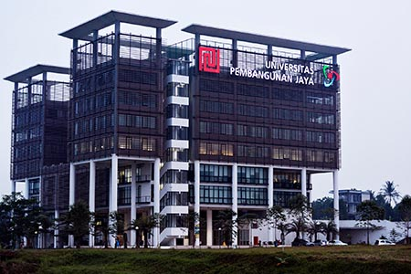
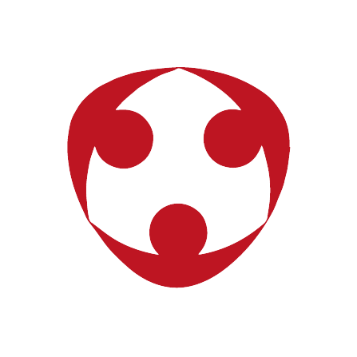

Universitas Pembangunan Jaya (UPJ) adalah sebuah perguruan tinggi swasta
di daerah Bintaro yang berdiri pada tahun 2011 dan didukung oleh kelompok
usaha Pembangunan Jaya. Kelompok usaha Pembangunan Jaya memiliki 17 usaha
yang bergerak dibidang properti, manufaktur, konsultan manajemen,
konsultan desain, kontraktor, pariwisata/rekreasi, trading, mekanikal &
elektrikal dan pendidikan. Kelompok usaha Pembangunan Jaya memiliki
pengalaman lebih dari 50 tahun dalam mengelola sektor usaha dan beritikad
untuk mengabdikan sebagian dari kegiatan usaha induknya ke pendidikan
dalam membangun sumber daya manusia Indonesia yang lebih berkualitas.
Itikad ini, telah diwujudkan dengan mendirikan Yayasan Pendidikan Jaya
sejak 3 September 1991. Yayasan Pendidikan Jaya telah menaungi
penyelenggaraan pendidikan taman kanak-kanak, pendidikan dasar dan
pendidikan menengah yaitu TK/SD/SMP/SMA Sekolah Pembangunan Jaya I di
Bintaro sejak tahun 1992, TK/SD/SMP/SMA Global Jaya tahun 1995, dan TK dan
SD Sekolah Pembangunan Jaya II di Surabaya sejak tahun 2006. Berangkat
dari keberhasilan dalam pengelolaan pendidikan dasar dan menengah lebih
dari 10 tahun, Yayasan Pendidikan Jaya berinisiatif melangkah lebih jauh
untuk membentuk institusi pendidikan tinggi yang diberi nama Universitas
Pembangunan Jaya. Melalui perjalanan yang cukup panjang dan berliku
akhirnya Universitas Pembangunan Jaya berhasil mengantongi ijin
penyelenggaran pendidikan tinggi pada tahun 2011.Berbekal moto "Integrity,
professionalism, and Entrepreneurship", UPJ adalah sebuah rumah belajar di
mana di mana mahasiswa dapat menimba ilmu dan mengembangkan diri untuk
menjadi insan berintegritas, profesional, kreatif, inovatif, dan berjiwa
entrepreneur.
Awal mula penyelenggaraan pendidikan tinggi, UPJ menempati sebuah ruko yang berada di kawasan Bintaro Jaya. Seiring dengan pertumbuhan mahasiswa dan kebutuhan pengembangan kampus yang lebih baik, dengan dukungan penuh dari kelompok usaha Pembangunan Jaya dan Yayasan Pendidikan Jaya, UPJ menempati gedung baru yang juga berada di kawasan Bintaro Jaya sejak Juni 2015. Keseriusan kelompak usaha Pembangunan Jaya dan yayasan Pendidikan Jaya dalam mendukung UPJ ditunjukkan dengan komitmen lahan seluas 15 hektar yang dialokasikan untuk pengembangan UPJ 20 tahun ke depan.
Identitas
Pembangunan Jaya (PJ) sadar akan kewajibannya sebagai bagian dari lembaga pendidikan di dalam kehidupan bangsa ini dan dengan pengalaman membangun sumber daya insani melalui pendidikan dasar dan menengah, PJ mempunyai kepercayaan diri untuk melangkah lebih jauh dengan menyelenggarakan perguruan tinggi yang akan diberi nama Universitas Pembangunan Jaya. Induk organisasi PJ merasa sudah waktunya merintis jenis perguruan tinggi yang unik dan sesuai dengan kekuatannya serta berpeluang menciptakan generasi berikut yang mampu mendorong perkembangan kehidupan bangsa ke arah cerdas, kreatif, bermoral, penuh tanggung jawab sebagai warga dan mampu menciptakan lapangan kerja baru.
Universitas Pembangunan Jaya (UPJ) adalah perguruan tinggi baru yang didirikan oleh kelompok usaha Pembangunan Jaya dengan Ijin Operasional sesuai dengan Surat Keputusan Menteri Nomor 38/D/O/2011 tanggal 25 Pebruari 2011. Kelompok usaha Pembangunan Jaya memiliki 17 usaha yang bergerak dibidang property, manufaktur, konsultan manajemen, konsultan desain, kontraktor, pariwisata/rekreasi, trading, mekanikal & elektrikal dan pendidikan.
Nilai
UPJ mengadopsi nilai-nilai Jaya yang merupakan nilai-nilai yang disarikan dari pengalaman lebih dari 50 tahun jatuh bangun kelompok usaha Pembangunan Jaya. Nilai-nilai ini telah teruji oleh waktu dan menjadi pegangan dan panduan bagi segenap sivitas akademika UPJ.
INTEGRITAS
Menjunjung tinggi etika dan moral, bersikap jujur dan konsisten antara pikiran, perkataan dan perbuatan
KOMIT
Taat pada kesepakatan, memegang janji dan dapat diandalkan serta dapat dipercaya
ADIL
Adil dan bermartabat terhadap semua pihak

INTRAPRENEURSHIP
Berorientasi pada pertumbuhan usaha yang menguntungkan perusahaan, dengan selalu mencari dan melihat peluang usaha guna meningkatkan "shareholder's value"
DORONGAN BERPRESTASI
Motivasi yang kuat yang dilandasi kecintaan pada pekerjaan yang tercermin dalam minat, niat, tekad, semangat dan kesungguhan yang tinggi untuk mencapai hasil terbaik
 Pembangunan Jaya (PJ) sadar akan kewajibannya sebagai bagian dari lembaga pendidikan di dalam kehidupan bangsa ini dan dengan pengalaman membangun sumber daya insani melalui pendidikan dasar dan menengah, PJ mempunyai kepercayaan diri untuk melangkah lebih jauh dengan menyelenggarakan perguruan tinggi yang akan diberi nama Universitas Pembangunan Jaya. Induk organisasi PJ merasa sudah waktunya merintis jenis perguruan tinggi yang unik dan sesuai dengan kekuatannya serta berpeluang menciptakan generasi berikut yang mampu mendorong perkembangan kehidupan bangsa ke arah cerdas, kreatif, bermoral, penuh tanggung jawab sebagai warga dan mampu menciptakan lapangan kerja baru.
Pembangunan Jaya (PJ) sadar akan kewajibannya sebagai bagian dari lembaga pendidikan di dalam kehidupan bangsa ini dan dengan pengalaman membangun sumber daya insani melalui pendidikan dasar dan menengah, PJ mempunyai kepercayaan diri untuk melangkah lebih jauh dengan menyelenggarakan perguruan tinggi yang akan diberi nama Universitas Pembangunan Jaya. Induk organisasi PJ merasa sudah waktunya merintis jenis perguruan tinggi yang unik dan sesuai dengan kekuatannya serta berpeluang menciptakan generasi berikut yang mampu mendorong perkembangan kehidupan bangsa ke arah cerdas, kreatif, bermoral, penuh tanggung jawab sebagai warga dan mampu menciptakan lapangan kerja baru.